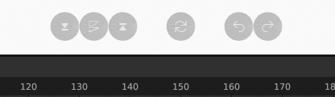

Basic Usage #
User Interface #
NijiGPen creates new user interfaces to trigger its functions in the following places of Blender.
Sidebar Panels #
A tab named NijiGP will appear in the sidebar of the 3D Viewport, if the active object is Grease Pencil and the mode is Draw, Edit or Weight Paint. This is the major way of calling NijiGPen’s functions.
NijiGPen operators are categorized in several panels. Depending on the current mode, different panels or operators may appear.
Tools #
NijiGPen adds several new tools in the Toolbar of Grease Pencil Edit mode. The tool icons have a “2D” mark on them.
These tools have the same effect as the corresponding operators in the sidebar panel. However, they allow you to tune the parameters with mouse dragging instead of typing numbers.

Shortcut Buttons (Optional) #
NijiGPen also adds some buttons at the bottom of the 3D Viewport window. They are shortcuts of the following functions:
- Undo/redo
- Tilt the canvas
- Arrange selected strokes forward/backward

The purpose of these shortcut buttons is to enhance the user experience on touchscreens (e.g., Microsoft Surface), since painting software on tablets usually have such buttons.
If you do not need them or find them conflicting with other add-ons, you can change their position or shut them off in the setting of
Preferencespanel.
2D Working Plane #
Most of the add-on operators work in a 2D plane. If you are working with Blender’s 2D Animation template (using X-Z plane by default), there would be no problems. However, when working in the 3D space (e.g., painting on the surface of an object), the way of determining the 2D working plane should be paid attention to.
- In the default mode (“Auto”), the add-on first estimates the coordinates of all input stroke points to determine the vectors of two most important dimensions. Then it uses the current view to determine the front/back and up/down directions.
- Please avoid selecting strokes belonging to more than one 2D plane as the input. In that case, the estimation can be wrong. (A warning message will show up when it happens.)
- There are also other modes available, including using the current view, or using an orthogonal plane (X-Y, X-Z or Y-Z). It can be set in the
Global Settingpanel.
Applying a rotation in a Grease Pencil layer’s attribute may disturb the detection of the working plane. If you want to use layer rotation with NijiGPen, please make sure to check the Use Transform of Active Layer option and process strokes from a single layer per operation.